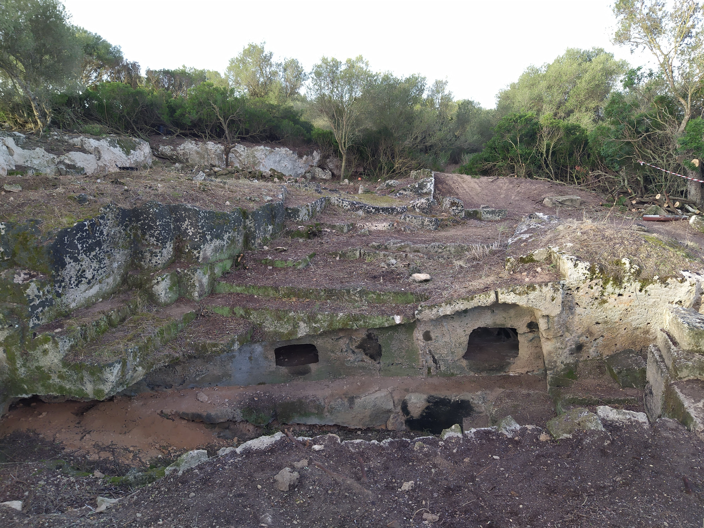
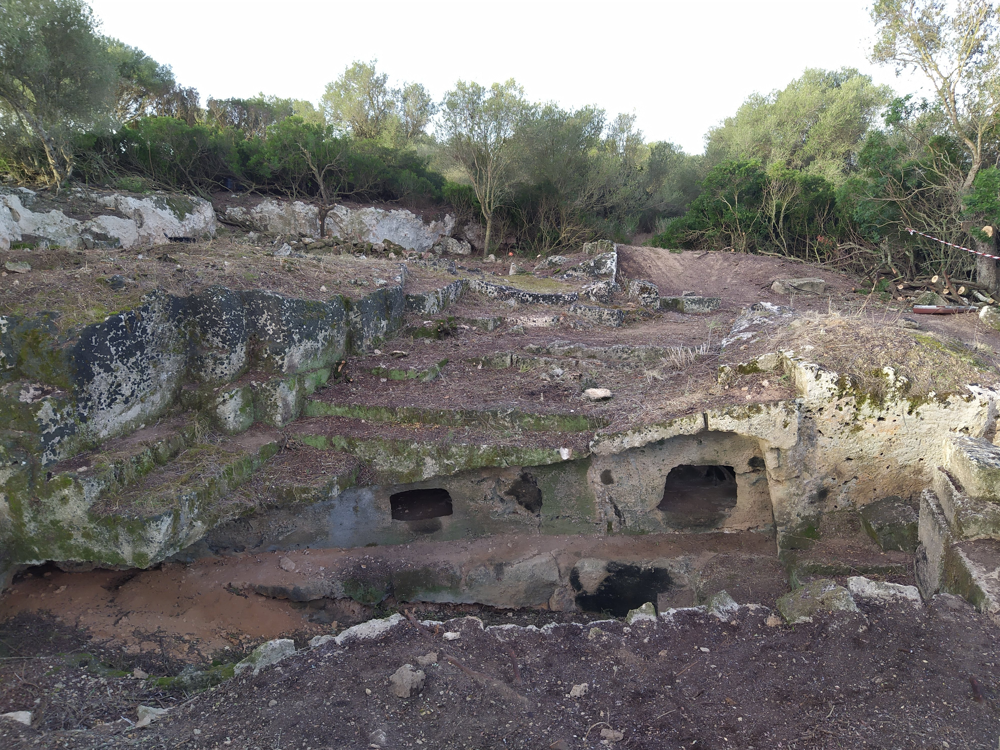

La necròpolis de Son Sunyer és una necròpolis de coves artificials d'època pretalaiòtica, situada a Palma (Mallorca). No es coneix amb precisió el nombre de coves que forma el conjunt, però es tenen indicis d'almenys vuit cavitats artificials, excavades a la roca i de diferent tipologia. Hi ha exemplars de cambra circular i corredor d'accés simple, alternats amb altres de més complexos que incorporen elements com nínxols, bancs laterals i trinxera central. Cristòfol Veny (1968) es refereix a la cova 10 com "sa Cova de sa Figuera", parla dels dos portals d'accés i del forat circular d'1,05 m. de diàmetre, que ignora si es va fer amb el propòsit d'excavar un sitjot o bé obeeix a un plantejament religiós.
 
